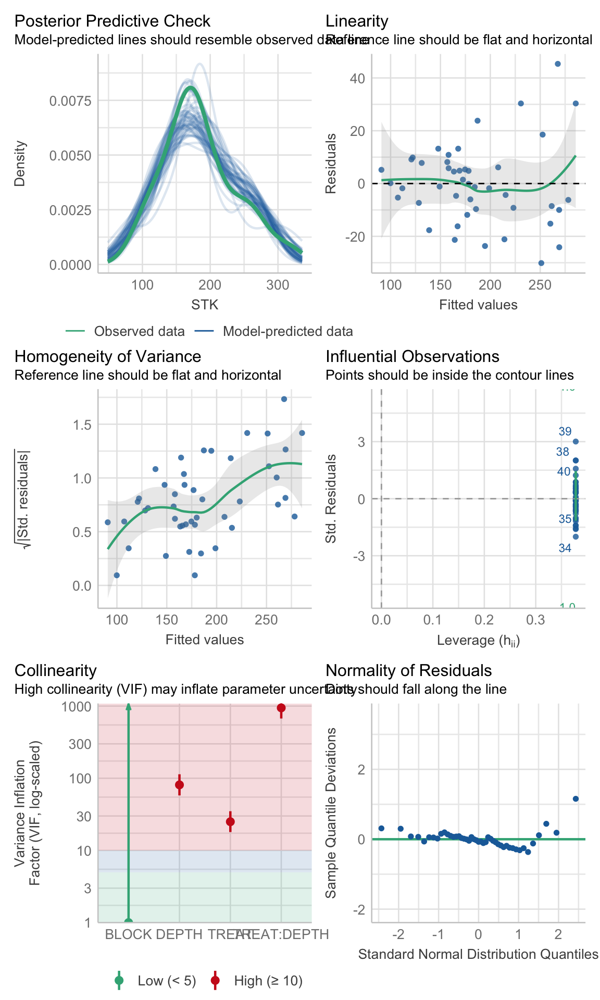
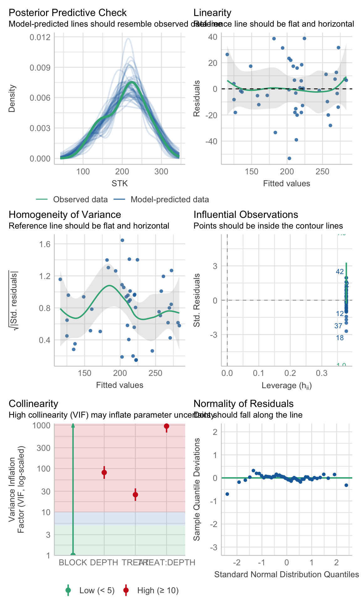

library(pacman)
p_load("readxl") # To open/save excel files
p_load('dplyr', "tidyr","purrr", "forcats", "stringr") # Data wrangling
p_load("nlme", "lme4") # Mixed models libraries
p_load("broom", "broom.mixed") # Managing models results
p_load("performance") # Check assumptions and performance
p_load("emmeans","multcomp","multcompView",
"car", "multilevelmod") # Aov and mult comp
p_load("ggplot2") # Figures
p_load("agricolae") # Miscellaneous functions
p_load("agridat") # For dataModels IV: Mixed Models II
linear models
R
statistics
agriculture
Summary
This tutorial provides a tidy workflow to analyze another case of common mixed model in agriculture: Repeated-measures.
1 What are repeated measures models?
Repeated measures models are a type of statistical model used when the same experimental unit is measured multiple times under different conditions or over time. These models account for the fact that repeated observations from the same unit (e.g., plant, plot, soil location) are not independent but correlated.
In agriculture, repeated measures designs are common in various scenarios, including:
• Time-based measurements: Tracking crop growth, soil nutrients, or yield over multiple time points. Or also treatments applied to the same unit over time such as fertilization trials where the same plots receive different treatments over multiple years.
• Spatially repeated measurements: Soil properties at different depths, plant characteristics at multiple canopy levels, or yield components across field zones.1.1 Mixed Models for Repeated Measures
Linear mixed models (LMMs) are typically used for analyzing repeated measures because they allow us to include: 1. Fixed effects – Factors of interest, such as treatments, depths, or environmental conditions. 2. Random effects – Sources of variability, such as plot-to-plot differences or repeated observations on the same soil core.
2 Case Study
Today, we are going to reproduce the analysis I’ve performed myself for one of my publications few years ago (Correndo et al. 2021). Particularly, we are going to reproduce Figure 2

For this paper, we have data from 4 different locations. We tested the levels of soil potassium fertility, hereinafter as soil test K (STK), in long-term experiments (2000-2009) where the treatments of interest were: (i) Control (unfertilized), (ii) NPS (fertilized with NPS), and (iii) Pristine conditions (No Ag-history).
At each plot/sample, the STK was measured at five-consecutive soil depths (0-20, 20-40, 40-60, 60-80, and 80-100 cm). Thus, they we took “repeated measurements” over the space.
We were NOT interested in comparing locations since they had very different previous history, and crop rotation, so confounding effects may have obscured the inference. Therefore, site was not a factor under consideration, and all the analysis were fitted independently by site.
2.1 Required packages for today
2.2 Data
# Read data
# File online? Try this...
url_rm <- "https://raw.githubusercontent.com/adriancorrendo/tidymixedmodelsweb/refs/heads/master/data/02_repeated_measures_data.csv"
# Read file
rm_data_00 <-
read.csv(url_rm)
rm_data_01 <-
rm_data_00 %>%
# We need to create PLOT column to identify subject (Exp. Unit for Rep. Measures)
## Option 1, use "unite"
unite(data = ., col = PLOT, BLOCK,TREAT, sep = "_", remove=FALSE) %>%
# OR
## Option 2, use cur_group_id
# Identify Subplot
ungroup() %>%
group_by(BLOCK, TREAT) %>% # Don't need to add SITE here
# Create unique plot ID # Needed for Repeated Measures
mutate(plot = cur_group_id(), .after = PLOT) %>%
ungroup() %>%
## Transform to factor if needed
mutate(DEPTH = as.factor(DEPTH),
depth = as.integer(DEPTH), # Needed for CorAR1
BLOCK = factor(BLOCK),
SITE = factor(SITE),
TREAT = factor(TREAT)
)2.3 Exploratory analysis
Now, let’s use several functions to explore the data.
2.3.1 glimpse()
First, the glimpse() function from dplyr
# Glimpse from dplyr
dplyr::glimpse(rm_data_01)Rows: 180
Columns: 8
$ SITE <fct> site_1, site_1, site_1, site_1, site_1, site_1, site_1, site_1, …
$ PLOT <chr> "I_Control", "I_Control", "I_Control", "I_Control", "I_Control",…
$ plot <int> 1, 1, 1, 1, 1, 4, 4, 4, 4, 4, 7, 7, 7, 7, 7, 2, 2, 2, 2, 2, 5, 5…
$ TREAT <fct> Control, Control, Control, Control, Control, Control, Control, C…
$ BLOCK <fct> I, I, I, I, I, II, II, II, II, II, III, III, III, III, III, I, I…
$ DEPTH <fct> 10, 30, 50, 70, 90, 10, 30, 50, 70, 90, 10, 30, 50, 70, 90, 10, …
$ STK <int> 105, 83, 103, 110, 127, 119, 98, 106, 107, 109, 132, 100, 96, 10…
$ depth <int> 1, 2, 3, 4, 5, 1, 2, 3, 4, 5, 1, 2, 3, 4, 5, 1, 2, 3, 4, 5, 1, 2…2.3.2 skim()
Then, the skim() function from skmir
# Skim from skimr
skimr::skim(rm_data_01)| Name | rm_data_01 |
| Number of rows | 180 |
| Number of columns | 8 |
| _______________________ | |
| Column type frequency: | |
| character | 1 |
| factor | 4 |
| numeric | 3 |
| ________________________ | |
| Group variables | None |
Variable type: character
| skim_variable | n_missing | complete_rate | min | max | empty | n_unique | whitespace |
|---|---|---|---|---|---|---|---|
| PLOT | 0 | 1 | 5 | 12 | 0 | 9 | 0 |
Variable type: factor
| skim_variable | n_missing | complete_rate | ordered | n_unique | top_counts |
|---|---|---|---|---|---|
| SITE | 0 | 1 | FALSE | 4 | sit: 45, sit: 45, sit: 45, sit: 45 |
| TREAT | 0 | 1 | FALSE | 3 | Con: 60, NPS: 60, Pri: 60 |
| BLOCK | 0 | 1 | FALSE | 3 | I: 60, II: 60, III: 60 |
| DEPTH | 0 | 1 | FALSE | 5 | 10: 36, 30: 36, 50: 36, 70: 36 |
Variable type: numeric
| skim_variable | n_missing | complete_rate | mean | sd | p0 | p25 | p50 | p75 | p100 | hist |
|---|---|---|---|---|---|---|---|---|---|---|
| plot | 0 | 1 | 5.00 | 2.59 | 1 | 3.00 | 5 | 7.00 | 9 | ▇▇▃▇▇ |
| STK | 0 | 1 | 181.84 | 63.09 | 74 | 138.75 | 174 | 221.25 | 406 | ▅▇▅▂▁ |
| depth | 0 | 1 | 3.00 | 1.42 | 1 | 2.00 | 3 | 4.00 | 5 | ▇▇▇▇▇ |
2.3.3 ggplot()
And let’s use ggplot2 for a better look
# Boxplot
rm_data_01 %>%
dplyr::select(-depth) %>%
# Plot
ggplot() +
# Boxplots
geom_boxplot(aes(x = reorder(DEPTH, desc(DEPTH)), y = STK, fill = TREAT))+
# Axis labels
labs(x = "Soil depth (cm)", y = "STK (g/m2)")+
# Plot by site
facet_wrap(~SITE)+
# Flip axes
coord_flip()+
# Set scale type
scale_x_discrete()+
# Change theme
tidybayes::theme_tidybayes()2.3.4 Additional data manipulation?
rm_data_02 <-rm_data_01 %>%
# Create a grouping variable (WHY?) # Needed for HetVar
mutate(GROUP = case_when(TREAT == "Pristine" ~ "Pristine",
TRUE ~ "Agriculture"))2.4 Candidate Models
I’m sorry for this, but the most important step is ALWAYS to write down the model.
2.4.1 Formulae
2.4.1.1 m0. Block Fixed
In a traditional approach blocks are defined as fixed, affecting the mean of the expected value. Yet there is no consensus about treating blocks as fixed or as random. For more information, read Dixon (2016).
Let’s define the model. For simplification (and avoid writing interaction terms), here we are going to consider that \(\tau_i\) is the “treatment”.
\[ y_{ij} = \mu + \tau_i + \beta_j + \epsilon_{ij} \]
\[ \epsilon_{ij} \sim N(0, \sigma^2_{e} )\] where \(\mu\) represents the overall mean (if intercept is used), \(\tau_i\) is the effect of treatment-j over \(\mu\), \(\beta_j\) is the effect of block-j over \(\mu\), and \(\epsilon_{ij}\) is the random effect of each experimental unit.
# SIMPLEST MODEL
fit_block_fixed <- function(x){
lm(# Response variable
STK ~
# Fixed
TREAT + DEPTH + TREAT:DEPTH + BLOCK,
# Data
data = x)
}2.4.1.2 m1. Block Random
An alternative approach is considering a MIXED MODEL, where blocks are considered “random”. Basically, we add a term to the model that it is expected to show a “null” overall effect over the mean of the variable of interest but introduces “noise”. By convention, a random effect is expected to have an expected value equal to zero but a positive variance as follows: \[ y_{ij} = \mu + \tau_i + \beta_j + \epsilon_{ij} \] \[ \beta_j \sim N(0, \sigma^2_{b} )\] \[ \epsilon_{ij} \sim N(0, \sigma^2_{e} )\] Similar than before, \(\mu\) represents the overall mean (if intercept is used), \(\tau_i\) is the effect of treatment-j over \(\mu\), \(\beta_j\) is the “random” effect of block-j over \(\mu\), and \(\epsilon_{ij}\) is the random effect of each experimental unit.
So what’s the difference? Simply specifying this component: \[ \beta_j \sim N(0, \sigma^2_b) \], which serves to model the variance.
How do we write that?
# RANDOM BLOCK
fit_block_random <- function(x){
nlme::lme(
# Fixed
STK ~ TREAT + DEPTH + TREAT:DEPTH,
# Random
random = ~1|BLOCK,
# Data
data = x)
}2.4.3 Fit
Run the candidate models
STK_models <-
rm_data_02 %>%
# Let's group data to run multiple locations|datasets at once
group_by(SITE) %>%
# Store the data per location using nested arrangement
nest() %>%
# BLOCK as FIXED
mutate(model_0 = map(data, fit_block_fixed)) %>%
# BLOCK as RANDOM
mutate(model_1 = map(data, fit_block_random)) %>%
# COMPOUND SYMMETRY
mutate(model_2 = map(data, fit_corsymm)) %>%
# AUTO-REGRESSIVE ORDER 1
mutate(model_3 = map(data, fit_ar1)) %>%
# COMPOUND SYMMETRY + HETEROSKEDASTIC
mutate(model_4 = map(data, fit_corsymm_hetvar) ) %>%
# Data wrangling
pivot_longer(cols = c(model_0:model_4), # show alternative 'contains' model
names_to = "model_id",
values_to = "model") %>%
# Map over model column
mutate(results = map(model, broom.mixed::augment )) %>%
# Performance
mutate(performance = map(model, broom.mixed::glance )) %>%
# Extract AIC
mutate(AIC = map(performance, ~.x$AIC)) %>%
# Extract coefficients
mutate(coef = map(model, ~coef(.x))) %>%
# Visual-check plots
mutate(checks = map(model, ~performance::check_model(.))) %>%
ungroup()2.4.4 Check assumptions
Checking assumptions is always important. To learn more about data exploration, tools to detect outliers, heterogeneity of variance, collinearity, dependence of observations, problems with interactions, among others, I highly recommend reading (Zuur, Ieno, and Elphick 2010).
# Extracting by site
site_1_models <- STK_models %>% dplyr::filter(SITE == "site_1")
site_2_models <- STK_models %>% dplyr::filter(SITE == "site_3")
site_3_models <- STK_models %>% dplyr::filter(SITE == "site_4")
site_4_models <- STK_models %>% dplyr::filter(SITE == "site_2")(site_1_models %>% dplyr::filter(model_id == "model_0"))$checks[[1]](site_2_models %>% dplyr::filter(model_id == "model_0"))$checks[[1]]
(site_3_models %>% dplyr::filter(model_id == "model_0"))$checks[[1]]
(site_4_models %>% dplyr::filter(model_id == "model_0"))$checks[[1]]2.4.5 Model Selection
Compare models performance
# Visual model selection
best_STK_models <-
STK_models %>%
group_by(SITE) %>%
# Use case_when to identify the best model
mutate(best_model =
case_when(AIC == min(as.numeric(AIC)) ~ "Yes",
TRUE ~ "No")) %>%
ungroup()
# Plot
best_STK_models %>%
ggplot()+
geom_point(aes(x = model_id, y = as.numeric(AIC),
color = best_model, shape = best_model),
size = 3)+
facet_wrap(~SITE)# Final models
selected_models <- best_STK_models %>% dplyr::filter(best_model == "Yes")2.4.6 ANOVA
Estimate the effects of factors under study (and their interaction)
models_effects <-
selected_models %>%
# Type 3 Sum of Squares (Partial SS, when interactions are present)
mutate(ANOVA = map(model, ~Anova(., type = 3)) )
# Extract ANOVAS
models_effects$ANOVA[[1]]Analysis of Deviance Table (Type III tests)
Response: STK
Chisq Df Pr(>Chisq)
(Intercept) 326.261 1 < 2.2e-16 ***
TREAT 39.994 2 2.067e-09 ***
DEPTH 12.637 4 0.013191 *
TREAT:DEPTH 21.827 8 0.005247 **
---
Signif. codes: 0 '***' 0.001 '**' 0.01 '*' 0.05 '.' 0.1 ' ' 1models_effects$ANOVA[[2]]Analysis of Deviance Table (Type III tests)
Response: STK
Chisq Df Pr(>Chisq)
(Intercept) 794.721 1 < 2.2e-16 ***
TREAT 21.394 2 2.261e-05 ***
DEPTH 67.224 4 8.743e-14 ***
TREAT:DEPTH 52.957 8 1.099e-08 ***
---
Signif. codes: 0 '***' 0.001 '**' 0.01 '*' 0.05 '.' 0.1 ' ' 12.5 Means comparison
# MULTCOMPARISON
# emmeans and cld multcomp
# We need to specify ourselves the most important interaction to perform the comparisons
mult_comp <-
models_effects %>%
# Comparisons estimates (emmeans)
mutate(mc_estimates = map(model, ~emmeans(., ~ TREAT*DEPTH))) %>%
# Assign letters and p-value adjustment (multcomp)
mutate(mc_letters =
map(mc_estimates,
~as.data.frame(
# By specifies a strata or level to assign the letters
cld(., by = "DEPTH", decreasing = TRUE, details=FALSE,
reversed=TRUE, alpha=0.05, adjust = "tukey", Letters=LETTERS))))2.6 Plot
Now, we are going to reproduce Figure 2
# Create data frame for plot
plot_df <- mult_comp %>%
dplyr::select(SITE, mc_letters) %>%
unnest(mc_letters)
# Define your own colors
my_colors <- c("#ffaa00", "#7E5AA0", "#5c9c8c")
# Create the plot
STK_plot <-
plot_df %>%
# We need to re-express DEPTH from factor to character, and then to numeric
mutate(DEPTH = as.numeric(as.character(DEPTH))) %>%
# Re-order levels of the factors
mutate(TREAT = fct_relevel(TREAT,"Control", "NPS", "Pristine")) %>%
mutate(SITE = fct_relevel(SITE,"site_1", "site_2", "site_3", "site_4")) %>%
# Create plot
ggplot()+
# 01. LAYOUT
## Subplots
facet_wrap(~SITE, nrow = 2)+
## Axis titles
labs(x = "Soil depth (cm)", y = bquote(~NH[4]*'OAc-K (g' ~m^-2*')'))+
# 02. GEOMETRIES
## i. Points
geom_point(aes(x = DEPTH, y = emmean,
fill= TREAT,
shape = TREAT),
size = 3, col = "black")+
## Adjust shape aesthetics
scale_shape_manual(name="Fertilizer Scenario", values=c(24,23,21),
guide="legend")+
scale_colour_manual(name="Fertilizer Scenario",
values = my_colors,
guide='legend')+
scale_fill_manual(name="Fertilizer Scenario",
values = my_colors,
guide='legend')+
## ii. Add error bar
geom_errorbar(width = 0.25, aes(x = DEPTH, color = TREAT,
ymin = emmean-2*SE, ymax = emmean+2*SE))+
## iii. Add line
geom_line(size = 0.5,aes(x = DEPTH, y = emmean, color = TREAT))+
# 03. ADJUST XY AXIS
## Reverse the scale
scale_x_reverse(breaks=seq(0, 100, 20), limits = c(100,0))+
coord_flip()+
# 04. THEME
theme_bw()+
theme(strip.text = element_text(size = rel(1.25)),
strip.background = element_blank(),
# Grid
panel.grid = element_blank(),
# Axis
axis.title = element_text(size = rel(1.5)),
axis.text = element_text(size = rel(1.25), color = "black"),
# Legend
legend.position = "top", legend.title = element_blank(),
legend.text = element_text(size = rel(1.25)) )2.6.1 Figure with caption
STK_plot
Figure 2. Soil profiles of STK (\(g~m^{-2}\)) under three different conditions: pristine soils (green circles), under grain cropping from 2000 to 2009 with no fertilizers added (Control, orange triangles), and under grain cropping from 2000 to 2009 with N, P, plus S fertilization (NPS, purple diamonds). Overlapping error bars indicate absence of significant differences between scenarios by soil depths combinations (Tukey’s HSD, p < 0.05).
References
Correndo, Adrian A., Gerardo Rubio, Fernando O. García, and Ignacio A. Ciampitti. 2021. “Subsoil-Potassium Depletion Accounts for the Nutrient Budget in High-Potassium Agricultural Soils.” Scientific Reports 11 (1). https://doi.org/10.1038/s41598-021-90297-1.
Dixon, Philip. 2016. “Should Blocks Be Fixed or Random?” Conference on Applied Statistics in Agriculture, May 1-3, Kansas State University, 23–39. https://doi.org/10.4148/2475-7772.1474.
Zuur, Alain F., Elena N. Ieno, and Chris S. Elphick. 2010. “A Protocol for Data Exploration to Avoid Common Statistical Problems.” Methods in Ecology and Evolution 1 (1): 3–14. https://doi.org/https://doi.org/10.1111/j.2041-210X.2009.00001.x.